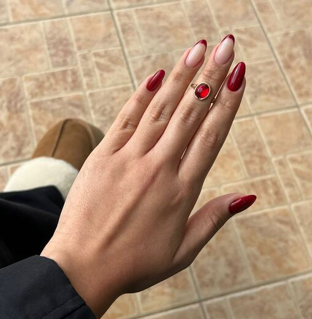
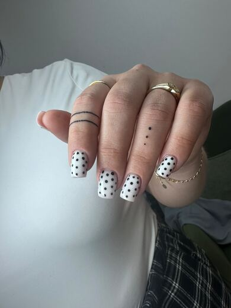
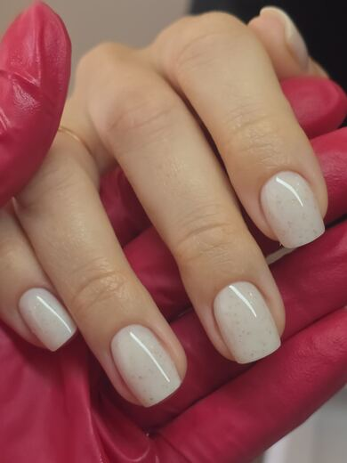
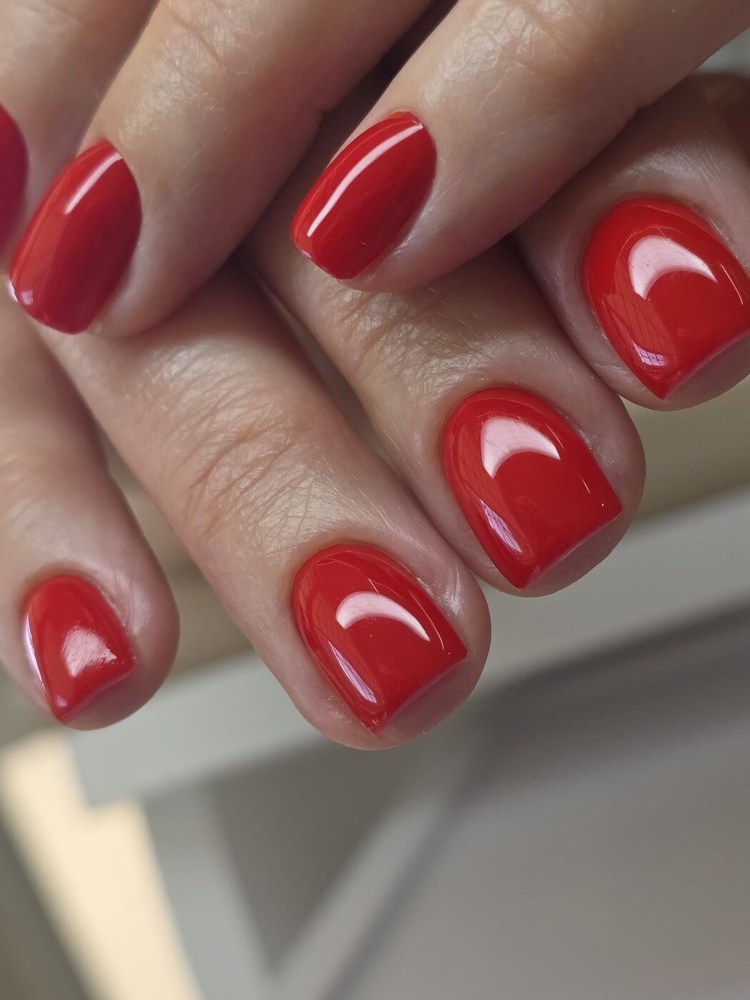
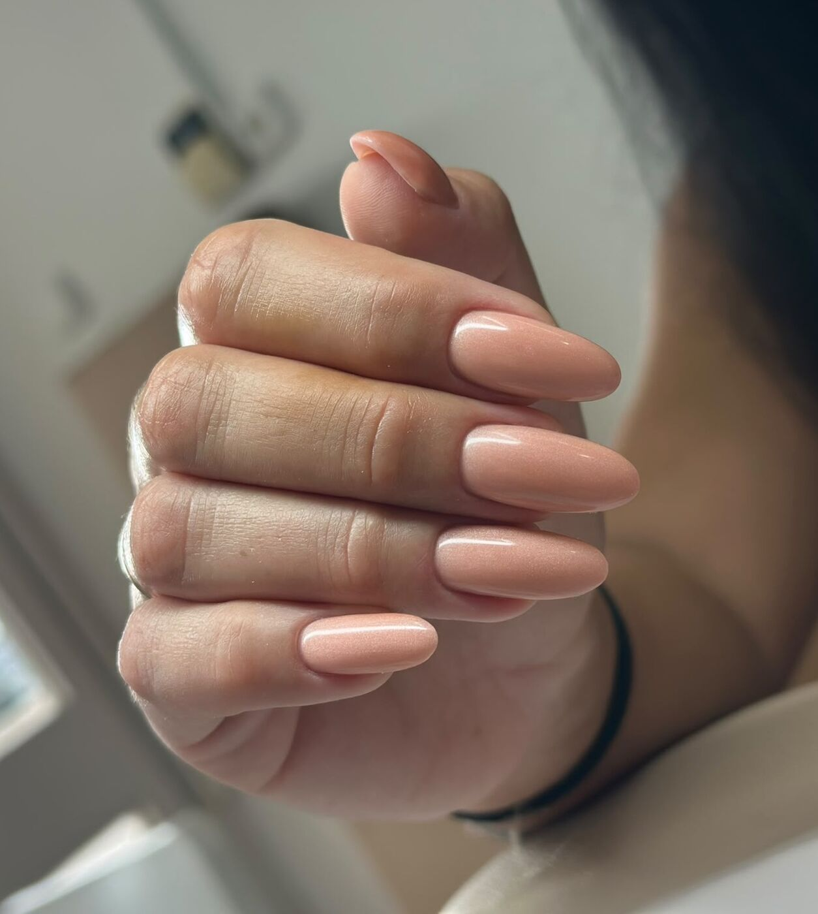
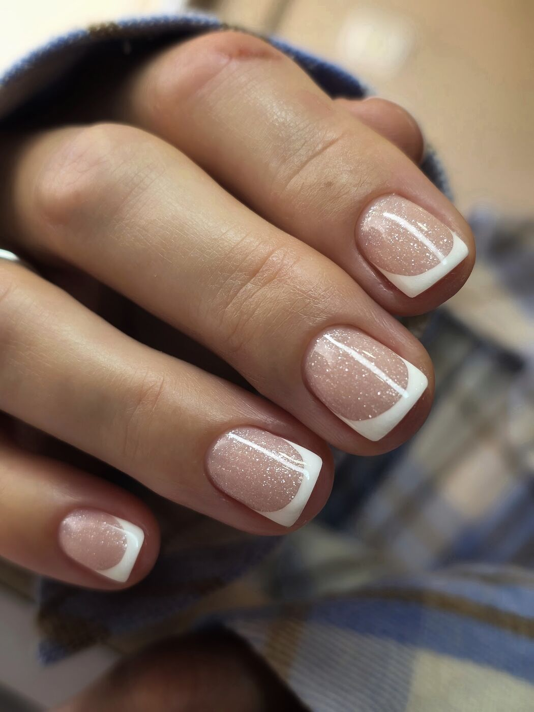

מניקורManicure
צורה, קוטיקולה וגימורShape, cuticle and finish
קונספט לדוגמה שנבנה עבור NAIL POINT · זה אינו האתר הרשמי של העסקA sample concept built for NAIL POINT · This is not the business’s official website
הכול מתחיל בנקודה אחתIt all starts with one point
מניקור, פדיקור ולק ג׳ל · חניתה 64, חיפהManicure, pedicure and gel polish · 64 Hanita St, Haifa



בסיס, צבע, טופ ומנורה. ככה נבנית כל ציפורן.Base, colour, top coat and the lamp. That is how each nail is built.



צילום מהסלוןPhoto from the salonצילומים אמיתיים של עבודות מהסלון.Real photos of work done at the salon.
בחרו טיפול, יום ושעה, וההודעה מוכנה.Pick a treatment, a day and a time, and the message is ready.
טיפולTreatment
יוםDay
שעהTime
86 ביקורות בגוגל. הנה ארבע מהן, מילה במילה.86 Google reviews. Here are four, word for word (translated from Hebrew).
ללא ספק המקום הכי טוב בחיפה. ציפורניים מהממות שלא נשברות והצוות מקצועי ונעים.
Without a doubt the best place in Haifa. Gorgeous nails that don’t break, and the team is professional and pleasant.
נאדיה מאסטר ציפורניים אלופה. מניקור מושקע מאודדדדד, נקי ומדויק. הציפורניים מושלמות
Nadia is a champion nail master. A very, very thorough manicure, clean and precise. The nails are perfect.
נאדיה בחורה מיוחדת ונעימה, מקצוענית ועושה את העבודה שלה מהלב. אני תמיד יוצאת מרוצה מהתוצאה תודה ענקית!
Nadia is a special, lovely person, a professional who does her work from the heart. I always leave happy with the result Huge thanks!
עבודה מושלמת!! ואווירה נעימה מאוד, אני תמיד מרוצה
Perfect work!! And a very pleasant atmosphere, I’m always happy.
ברחוב חניתה 64 בחיפה. המפה כאן למטה.At 64 Hanita St, Haifa. The map is just below.
ראשון עד חמישי 8:00–20:00, שישי 8:00–15:00, שבת סגור.Sunday to Thursday 8:00–20:00, Friday 8:00–15:00, closed on Saturday.
מניקור, פדיקור, לק ג׳ל ועיצוב ציפורניים.Manicure, pedicure, gel polish and nail art.
בהודעת וואטסאפ או בטלפון 053-701-6555.By WhatsApp message or by phone, 053-701-6555.
חיפה. מגיעים, מתיישבים, בוחרים צבע.Haifa. Come in, sit down, choose a colour.